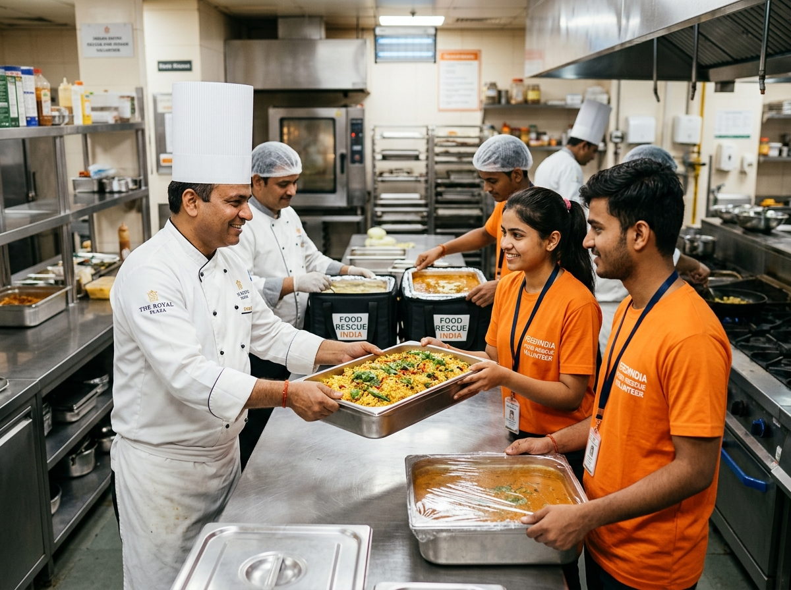

1
⏱️ Step Time: < 15 Mins
1. Quick Surplus Notification
When a banquet, corporate cafeteria, or wedding reception finishes, the organizer submits our simple 60-second online form or dials our helpline. No registration or app download needed. Our operations desk immediately registers the pickup in our database with a unique tracking ID.